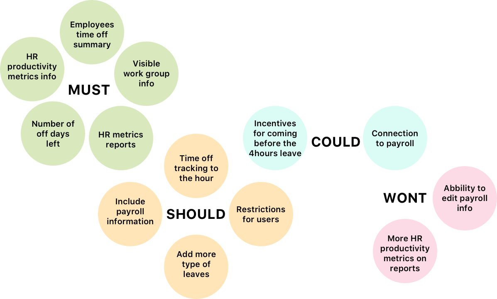
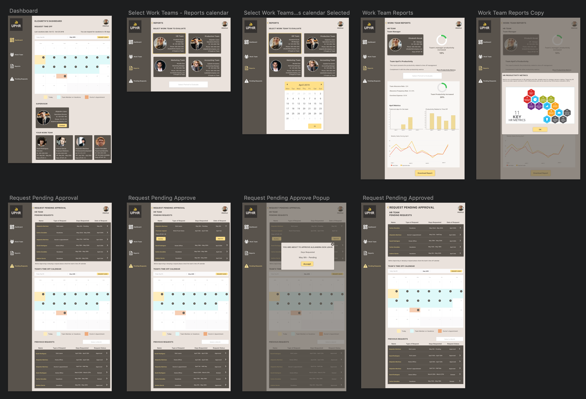

Research
Brief
The HR department is in charge of establishing systems for performance and employee development. This keeps people motivated, happy, personally engaged and contributing to company success.
What The Interviewees Said
“Companies fall short when their employees aren’t properly measured”
”One of my managers took two months to get back at me regarding my vacations”
”The system should be able to connect to payroll, one time I was paid full for some days I was not in the office and I got into a problem with payroll”
Companies

In the end both regular employees and people from HR mentioned that the HR department needed to have more information about the employees vacations and time off in order to implement HR productivity metrics.
Pain Point
There is not a total summary of the performance of the employees related with time off and following HR metrics
User Persona


The persona used for this project was Elizabeth, because she was working directly in HR experiencing the issue of the lack of metrics regarding performance and time off management
Problem Statement
HR Managers need a way to have all the information regarding the employees time off summarized so they can improve productivity metricsHR Managers need a way to have all the information regarding the employees time off summarized so they can improve productivity metrics
Prioritizing

Prototyping


The report screen was the hardest screen to pull off, because I wasn’t sure what would be the best way to present how productivity and time off is related with HR metrics. I tried with graphics and calendars and tested with users, since I was presenting a productivity report, the users expected graphs so I did my best in order to make them easy to correlate with time off.
Iterations


High Fidelity Prototype

See The Project
In order to understand how the web app works you should put yourself in Elizabeth’s place. For this you will be an HR manager that wants to know how was your teams productivity during the month of April. Since you are the HR team manager you want to check your employees pending vacation requests.